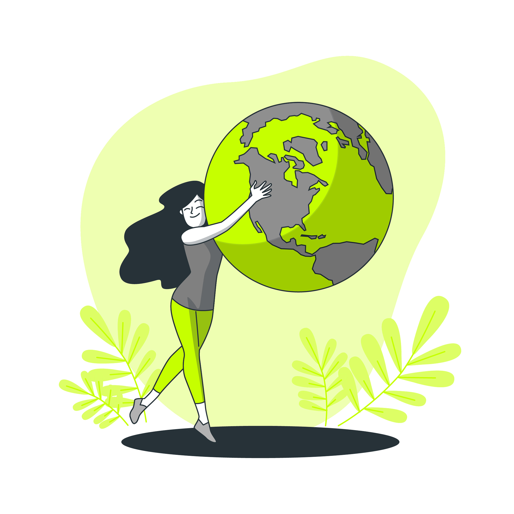
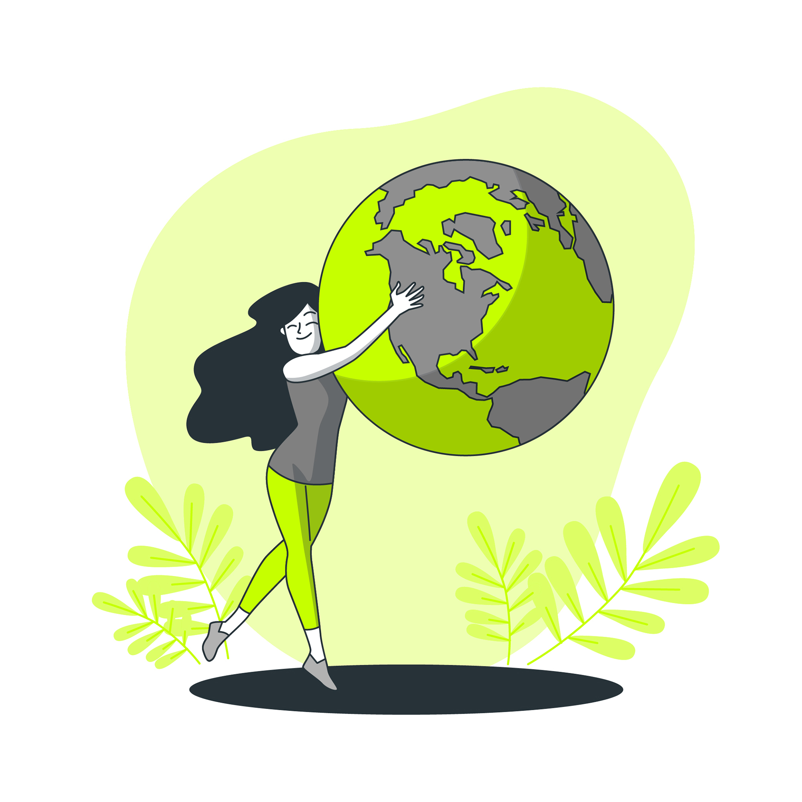

The Importance of Biodiversity Conservation
 

Bio-diversity on earth means the wide variety of life forms on earth including plants animals, micro-organisms and the ecosystem where they live. There are several levels of biological diversity including species diversity, genetic diversity and eco-system diversity. Bio diversity is the collection of all these levels.
Bio-diversity conservation means the efforts aimed to proptect prserve and manage these variety of organisms and eco-system on earth to ensure the sustainable exsistence and well being of tthose items.Bio diversity conservtion can be done by taking several steps including establishing and manging protected areas habitat re-storeation, species management, sustainable resource management,improving community engagement and also by implementing policies and regulations.
There are several importance of bio-diversity conservation.It is important for the stability and resilience of the eco system.It means as there are variety of organisms living in a particular eco system, that eco system would have the ability to withstand disturbances like habitat distruction, climate changes, food chain disruptions and disease out breaks.As there are a collection of organisms they help for each others existence and make the eco system a better place.
Bio diversity conservation also provide several eco system services to ensure the good health of the eco system including nutrient cycling, soil formation and improvement, clean water suply, climate regulation, flood controll and pollination.Also this may protect the important genatic resources of the organisms which would significantly essencial for the agriculture, medicine, bio-technology and also for the education feild.
Another importance is the climate change mitigation and adaptation as bio-diversity plays a significant role in regulation climatic patterns, controlling the release of green house gases and also act as a natural butter against many extreme weather events.
By studing all the above mentioned points, in conclusion it could be said that bio-diversity conservation is crusial as it place a significant role for the well being of the eco system and community.